업무 탐색 구조
조직·팀 기준으로 메뉴가 나뉘어 있어, 담당 조직을 알아야
원하는 업무를 찾을 수 있었습니다.
사내 인프라 업무요청 시스템(TASK)은 다양한 운영 업무를 요청하고 관리하는 내부 플랫폼입니다.
서비스가 확장되면서 메뉴와 요청 유형이 복잡해지고, 노후화된 UI로 인해 업무 탐색과 진행 상태 확인에
많은 시간이 소요되고 있었습니다.
이번 리뉴얼에서는 업무를 더 쉽게 찾고, 요청부터 진행 확인까지 하나의 흐름으로 사용할 수 있도록
탐색 구조와 정보 구조를 개선하고, 사용자 중심의 인터페이스를 설계했습니다.
UX 리서치와 정보 구조 설계를 기반으로 메인 대시보드, 업무요청, 상세 화면까지 사용자 경험을 전반적으로 개선했으며,
개발팀과 협업하여 실제 서비스에 적용될 수 있도록 디자인부터 프론트, QA까지 프로젝트 전 과정에 참여했습니다.
요청 유형이 늘어날수록 TASK는 찾기 어렵고, 쓰기 번거롭고, 확인하기 불편한 서비스가 되어 갔습니다.
사용자 관찰과 기존 서비스 분석을 통해 반복되는 불편을 세 가지 문제로 정리했습니다.
조직·팀 기준으로 메뉴가 나뉘어 있어, 담당 조직을 알아야
원하는 업무를 찾을 수 있었습니다.
요청 유형과 관계없이 긴 입력란에 직접 작성해야 해,
작성 편차와 누락이 잦았습니다.
상태·담당·승인 정보가 흩어져 있어, 진행 상황을 확인하려면
상세 하단까지 이동해야 했습니다.
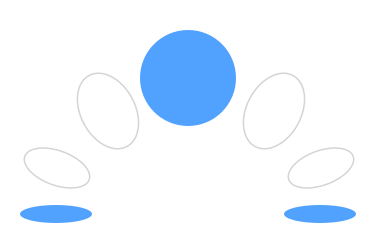
업무 유형 기준으로 카테고리를 재구성하고, 자주 쓰는 업무를
함께 제공해, 조직을 몰라도 바로 찾을 수 있게 했습니다.
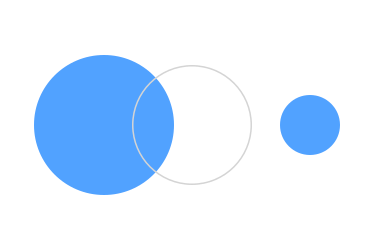
요청 유형에 맞는 입력 항목만 노출하고, 기본 정보 → 요청 정보 →
첨부 순으로 작성 흐름을 정리했습니다.
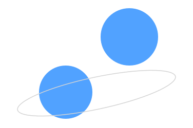
대시보드에 상태와 진행률을 요약하고,
상세 화면에서는 상태·담당·승인 정보를 우선 배치했습니다.
기존에는 조직과 팀을 기준으로 업무를 찾았다면, 리뉴얼에서는 업무를 기준으로 탐색할 수 있도록 정보 구조를 재설계했습니다.
자주 사용하는 업무는 빠르게 접근할 수 있도록 배치하고, 업무 카테고리를 통합하여 원하는 업무를 더 쉽게 찾을 수 있도록 구성했습니다.
카테고리마다 폼이 다름
80개 중 3개 예시
결재선 관리
실제 서비스 구조를 기반으로 작성했으며, 사내 보안 정책에 따라 일부 메뉴 및 업무명은 일반화하여 표기했습니다.
메인 화면에서 필요한 업무를 빠르게 찾고, 내가 요청한 업무의 진행 상황을
바로 확인할 수 있도록 업무 중심으로 구성했습니다.
조직·팀 기준으로 흩어져 있던 메뉴를 업무 기준 카테고리로 다시 묶었습니다.
자주 찾는 카테고리는 상단에 모아 필요한 업무를 빠르게 찾을 수 있습니다.
메인 상단에 내가 요청한 업무의 진행 상태를 카드로 요약해,
상세 화면을 보지 않아도 현재 상황을 바로 확인할 수 있습니다.
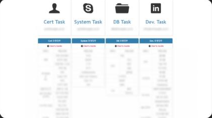
조직부터 알아야 업무를 찾을 수 있었던 메인 화면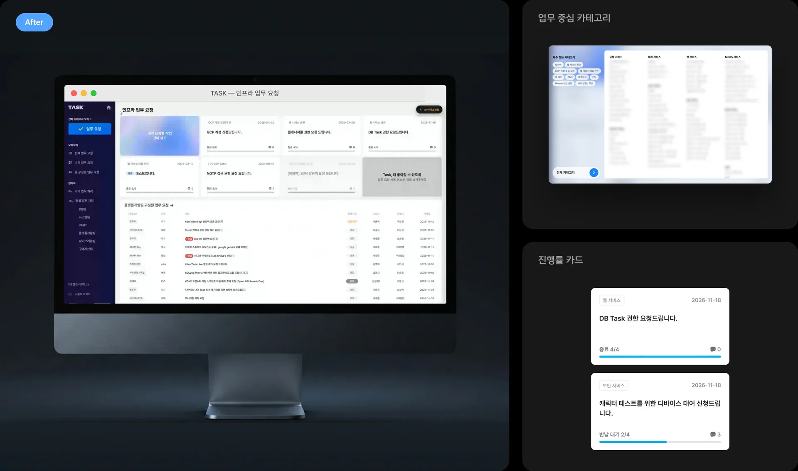
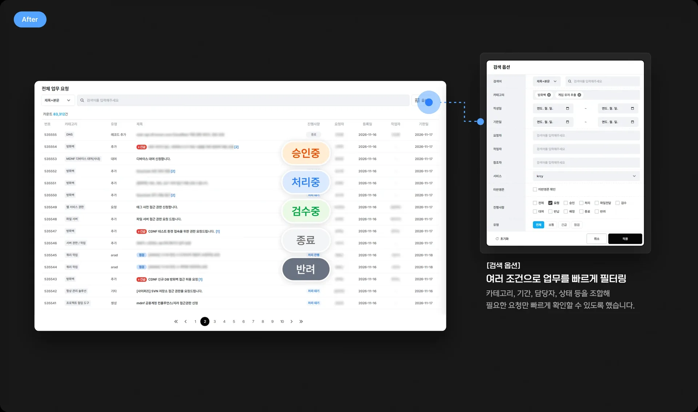
긴급·점검 여부를 상세 화면에 들어가지 않아도 알 수 있도록
리스트에 라벨을 만들고, 진행 상태에 색을 입혔습니다.
긴급·점검 요청은 제목 앞에 라벨로 바로 노출해,
관리자가 우선 처리할 요청을 한눈에 찾을 수 있습니다.
승인 대기, 처리 진행, 처리 대기, 종료 등 진행 상태를
색상 라벨로 구분해 업무 흐름을 바로 파악할 수 있습니다.
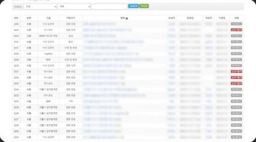
긴급·점검 여부를 상세에서만 확인할 수 있던 리스트요청 유형에 맞는 입력 항목만 보여주고 작성 흐름을 단계별로 정리해,
형식을 고민하지 않고 바로 작성할 수 있도록 구성했습니다.
요청 유형을 선택하면 해당 업무에 필요한 항목만 노출되고,
작업 구분 버튼과 입력 양식 예시로 형식을 고민하지 않고 바로 작성합니다.
기본 정보 → 요청 정보 → 첨부 순으로 작성 단계를 나누고,
공통 정보를 상단에 모아 누락을 줄였습니다.
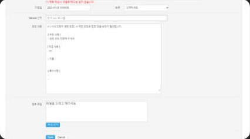
유형과 관계없이 똑같이 긴 입력 폼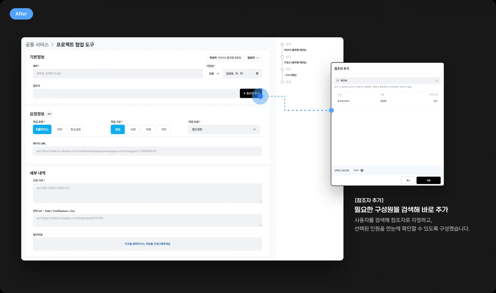
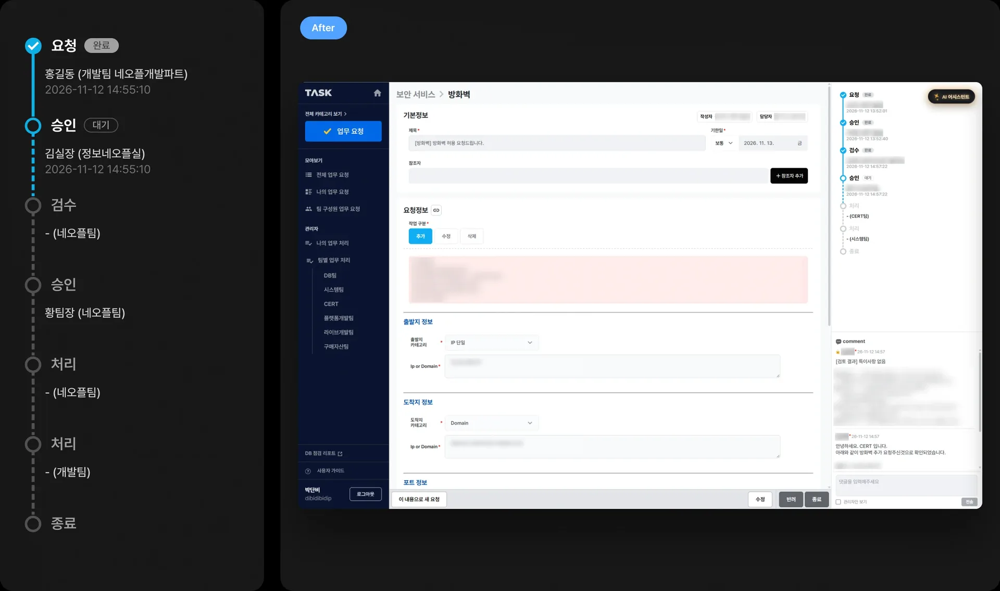
코멘트와 히스토리를 우측 패널로 옮겨 상시 노출해,
요청자가 지금 어느 단계에 있는지 바로 알 수 있도록 구성했습니다.
승인·검수·처리·종료 단계와 담당자, 처리 시각을 우측 타임라인으로 보여줘
요청이 지금 어느 단계에 있는지 바로 알 수 있습니다.
코멘트를 우측 패널에 고정해, 요청 내용을 보면서 승인 의견과
보완 요청을 바로 확인하고 답할 수 있습니다.
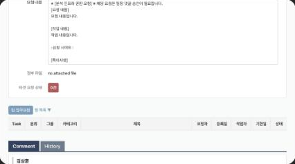
코멘트·히스토리를 보려면 하단까지 스크롤해야 했던 상세 화면Dark NavyRGB 10/19/47 Hex 0A132F
BlueRGB 81/162/255 Hex 51A2FF
Light GrayRGB 240/242/245 Hex F0F2F5
WhiteRGB 255/255/255 Hex FFFFFF
Aa123
ABCDEFGHIJKLMNOPQ
RSTUVWXYZ
abcdefghijklmnopqrst
uvwxyz / 1234567890.:?!
@*&%?